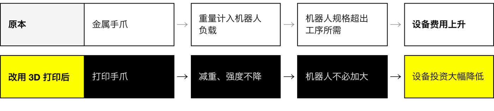

News & Insights

零件成本降 67%，交期从 14 天缩短到 1 天
关键不只在于零件便宜。金属手爪太重，使机器人必须选用超出工序所需的规格；手爪减重之后，机器人不必再随之加大，整套自动化设备的投资因此大幅降低。
起点
一家 88 年的零部件厂，和一道仍靠人工的工序
小岛创业 88 年，连同集团公司员工超过 8,000 人，在日本、美国、泰国、中国与欧洲设有基地；主要设计、生产汽车内饰件、外饰件与单元部件，依托集团供应链提供从开发到量产的一站式服务。
电动化与系统集成正在重塑汽车产业，全球化也让零部件企业之间的竞争更加激烈。小岛以 QCD——质量（Quality）、成本（Cost）、交期（Delivery）——为准则，持续追求成本更低、精度更高、速度更快的制造。
产线上有一道工序，需要作业员手工粘贴无纺布贴片。贴片数量增加之后，这道工序耗费的时间越来越多。为了节省人力，小岛开始用机器人将其自动化。


卡点
手爪太重，机器人就得买大一号
自动化设备上的机器人手爪，原本采用金属材料制作。手爪安装在机器人手臂末端，其重量直接计入机器人需要承担的负载。
金属手爪的重量，使机器人的规格被推高到超出工序实际所需的等级，设备费用也随之明显上升。换句话说，手爪的重量不只是手爪的问题——它反过来决定了要采购哪一级的机器人。

做法
改用 3D 打印，手爪自己做
小岛引入 Markforged 3D 打印机——案例中列出的机型为 Mark Two 与 X7——改以打印方式制作机器人手爪。
案例原文指出，改用 3D 打印件之后，手爪在保持生产使用所需强度的前提下显著减重；机器人因此不必选用过大的规格，设备投资大幅降低。
案例同时公开了几件用于产线的打印件：让缸体调整夹具底座角度的缸体连接件（Cylinder Joint）、在生产过程中定位并承托产品的承托夹具，以及存放成卷贴片的料架。


成果
67%、14 天变 1 天、少画一张 2D 图
费用。以 3D 打印制作的手爪零件，费用比传统机加工件低 67%。
交期。这类零件过去外协加工，案例列出的交期为 14 天；改由 Markforged 在厂内打印，1 天完成。与外协加工件相比，成本与交期均大幅缩减。
设计工时。外协加工必须先绘制 2D 加工图纸才能下单；3D 打印直接以 3D CAD 数据开始制作。视零件而定，设计工时可减少约 30%。
三个数字中，最后一个最容易被忽略。2D 加工图纸本身不会装到设备上，但外协加工离不开它；改为厂内打印，这一步就可以省去。
解读
先看手爪，再定机器人
对正在将人工工序自动化的零部件企业，小岛的经验提供了一个检查顺序：手爪的重量反过来决定机器人的规格，机器人的规格决定设备投资。手爪若能在厂内做轻、做快，整个自动化项目的成本与进度，就多了一个可以调整的变量。
小岛打印的不是卖给客户的产品，而是产线上的工具——手爪、夹具、料架。这类零件大多依工序量身设计、小批量制作，恰恰是外协加工费用与等待时间最明显的地方；本案的三个数字，都落在这一段。
案例主角

Logo 取自 Markforged 官方客户案例文件；商标归小岛冲压工业（小島プレス工業株式会社）所有，此处仅用于标示案例主角。
完整案例整理（A4 · 6 页）
本案的完整整理，含公司背景、工序课题、打印件逐件说明与 QCD 成果数据。三语版本，可直接下载引用。
资料来源
- Markforged 官方客户案例〈Kojima Industries Corporation〉英文版，2026 年 10 月 22 日发布；本文事实、数据、人物职务与零件说明均引自该案例及其下载版 PDF
https://markforged.com/resources/case-studies/robotic-tooling-with-kojima-industries-corporation - 同一案例日文版〈小島プレス工業株式会社〉，为客户母语原文，含受访者完整职务
https://markforged.com/jp/resources/case-studies/robotic-tooling-with-kojima-industries-corporation - 小岛冲压工业（小島プレス工業株式会社）官方网站
https://www.kojima-tns.co.jp/ - 照片与 logo 取自 Markforged 官方客户案例配图，版权归 Markforged 或小岛冲压工业所有
本文由 Markforged 大中华区暨越南团队整理。
回到媒体中心 · markforged.tw